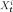

Parametric stationary covariance models¶
Let  be a multivariate
stationary normal process where
be a multivariate
stationary normal process where  . The process
is supposed to be zero mean. It is entirely defined by its covariance
function
,
defined by
for all .
. The process
is supposed to be zero mean. It is entirely defined by its covariance
function
,
defined by
for all .
be a multivariate
stationary normal process where . The process
is supposed to be zero mean. It is entirely defined by its covariance
function
,
defined by
for all .If the process is continuous, then . In the
discrete case,  is a lattice.
is a lattice.
is a lattice.This use case illustrates how the User can create a covariance
function from parametric models. The library proposes the
multivariate Exponential model as one of the possible parametric models for the
covariance function  .
.
.The multivariate exponential model
This model defines the covariance function by:
(1)¶
where is a correlation matrix, is defined by:
(2)¶
and is defined by:
(3)¶
with  and for any
and for any  .
.
We call  the amplitude vector and
the amplitude vector and
 the scale vector.
The expression of is the combination of:
the scale vector.
The expression of is the combination of:
the matrix
 that models the spatial correlation
between the components of the process
that models the spatial correlation
between the components of the process  at any vertex
at any vertex
 (since the process is stationary):
(since the process is stationary):(4)¶

the matrix that models the correlation between the marginal random variables  and :
the matrix
 that models the variance of each marginal
random variable:
that models the variance of each marginal
random variable:
This model is such that:
(5)¶
It is possible to define the exponential model from the spatial
covariance matrix  rather than the correlation
matrix :
rather than the correlation
matrix :
(6)¶
API:
- See
AbsoluteExponential - See
DiracCovarianceModel - See
ExponentialModel - See
ExponentiallyDampedCosineModel - See
GeneralizedExponential - See
MaternModel - See
SquaredExponential